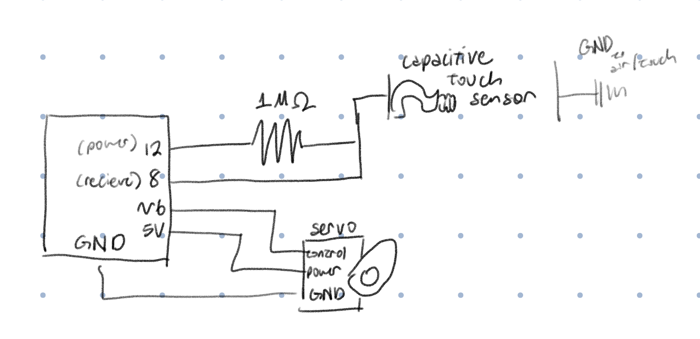
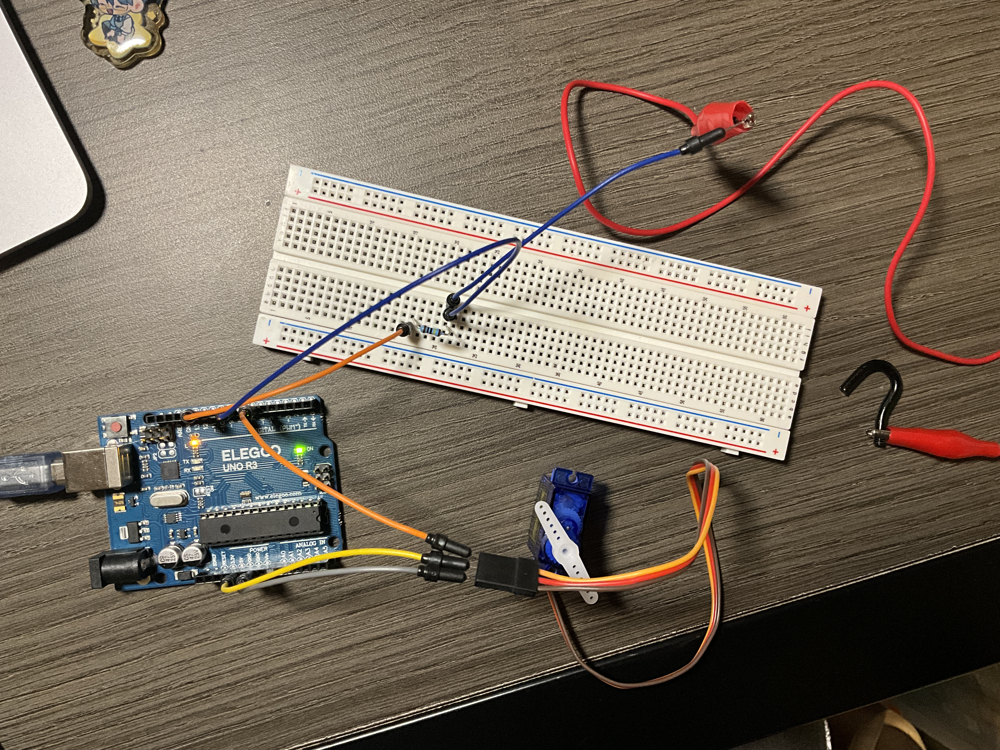
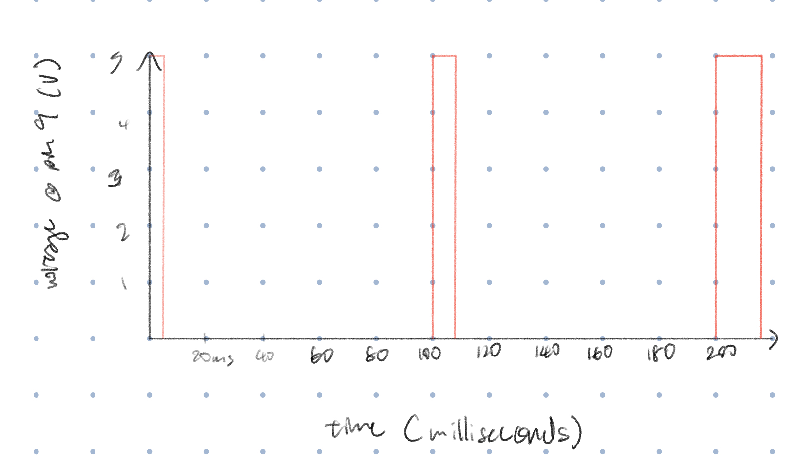

Here is all the documentation for assignment 4!
Here is all the documentation for assignment 4!

The schematic shows the use of a (self made) capacitive sensor and the use of a servo motor.
For the capacitive sensor, according to Arduino documentation, it is recommended to use a medium to large resistor (100k ohms to 50 mega ohms). Since I didn't have a resistor value that goes up to 50 mega ohms, I used my highest resistor value which is 1 mega ohm.

The capacitive sensor is powered by pin 12 and the sensor is pin 8, the resistor is inbetween those pins. The wire connected to the piece of metal used for the capacitive sensor is right after the sensor wire. The servo motor is connected to 5V power, ground, and pin 6 (PWM).
// adds the capacitive sensor library functions to this sketch
// adds the servo motor library functions to this sketch
#include
#include
// creates servo object to control servo motor
Servo myservo;
// creates capacitive sensor object to use/input, the 12 is the power and the 8 is the sensor pin, the resistor is inbetween these 2 pins
CapacitiveSensor cs = CapacitiveSensor(12,8);
// create variable for max value read through capacitive sensor (measured and estimated with the capacitive sensor example sketch and touch of 1 finger)
int sensMax = 2450;
// create variable for min value read through capacitive sensor (measured and estimated with the capacitive sensor example sketch and touch of 1 finger)
int sensMin = 10;
// create variable for the position of the servo motor
int pos = 0;
void setup() {
// put your setup code here, to run once:
// sets up serial moniter to write the sensor values
Serial.begin(9600);
//sets up servo monitor as an output
myservo.attach(6);
}
void loop() {
// put your main code here, to run repeatedly:
// stores the average of 30 sensor samples
long sensorVal = cs.capacitiveSensor(30);
// write to the serial monitor what value the sensor is sensing
Serial.println(sensorVal);
// maps the sensor value to a degree from 0 to 360 for the servo motor
pos = map(sensorVal, sensMin, sensMax, 0, 360);
// writes to the servo motor what position to be in
myservo.write(pos);
// wait 30 ms for servo to move
delay(30);
}
When I touch the sensor, the servo motor attempts to move 360 degrees (1 full finger touch would be 360 degrees). When I let go of the sensor, the servo motor returns to its starting position.

For each 1-degree increase in the servo position, the PWM per cycle increases. But since there is a delay of 100ms, it takes 5 PWM cycles to increase position and PWM values.
Perhaps with limiting the range of sensor values.
if(sensorVal > 2400){
sensorVal = prevSensVal;
}
if( sensorVal < 10){
sensorVal = prevSensVal;
}
Perhaps by doing a median filter.
int sensReading [WINDOW];
void loop() {
int sensVal = analogRead(sensPin);
sensReading [index] = sensVal;
sorted = sort(sensReading);
median_val = sorted[WINDOW/2];
}
No AI has been used in this assignment.